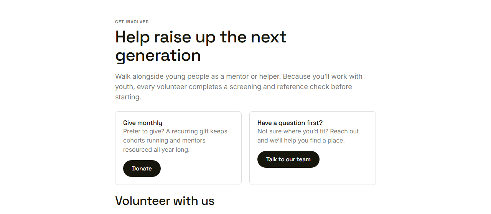
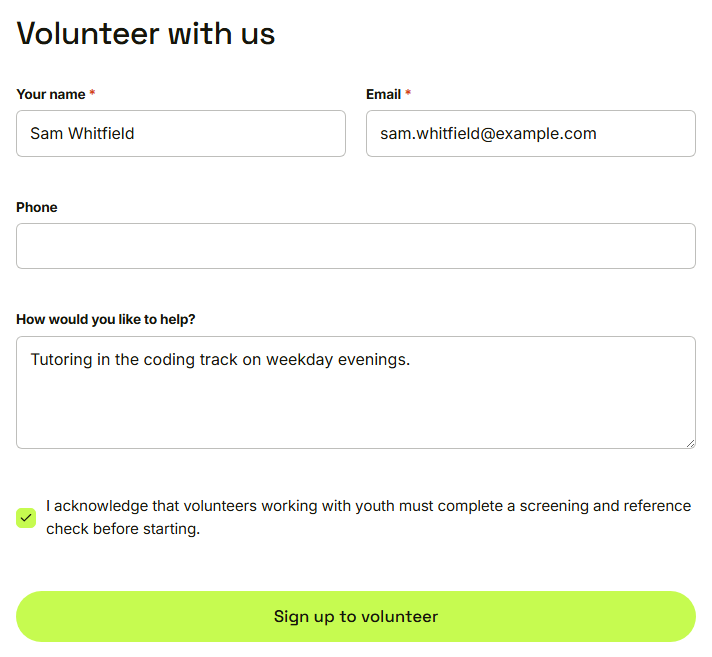
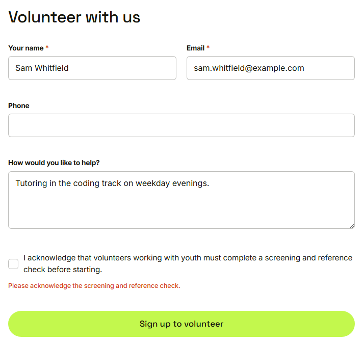
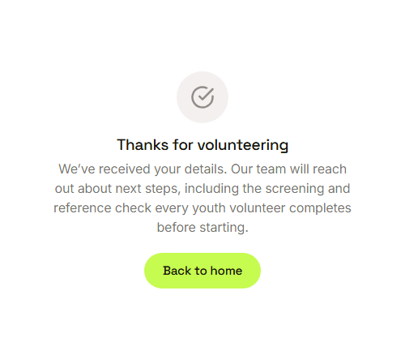

Waypoint · Video 017
Offering to volunteer
Clear about screening from the first step
Get involved

Screening is explained at the top
The volunteer form

The acknowledgement checkbox is last
Blocked until acknowledged

Nothing is sent
Thanks for volunteering

The team will reach out about next steps
Things to remember
Open to everyone
The screening and reference check is explained up front
Sign up is blocked until it is acknowledged
A thank you page explains what happens next